Ask Before You Transmit: An Energy-Frugal Evidence-Level
Semantic Communication System for UAV Visual Question Answering
1一页总览：这篇论文做了什么
三条贡献（对应论文 §I.A）：
- 发现证据–问题互补性 + 零参数路由规则：符号推理类问题（计数/比较/共存）用 0.9 KB 检测 token 回答得比传完整图更准（+0.11~+0.17），感知类问题（存在性）需要图（−0.08）；零参数规则与数据校准的 Wilson-LCB 选择器统计不可区分。
- 方法学统一「信道使用 + 焦耳」双轴的大规模评测方法：8 种方法、5 类问题、6 个 SNR、3 种信道，在统一复信道使用计费上叠加实测 GPU 功率的联合「通信+计算」能耗轴。
- 反直觉结论①路由在无差错信道上也赢传图（收益来自证据选择本身而非抗噪）；②每答案能耗前沿被计算主导——发射机最大的节能杠杆不是功率/速率自适应，而是拒绝跑 VLM；③token 截断非单调「少即是多」。外加能量价格 λ 让路由在全 token 与精度优先两端间连续可控。
2背景与动机
2.1 场景：无人机在线视觉问答
无人机做低空巡检/交通监控/应急响应时，地面操作员（或自动决策回路）对实时画面提出自然语言问题——「桥上有多少辆车？」。这是一个 VQA 任务，现代 VLM 只要拿到图就答得不错。瓶颈不再是「回答者」，而是「喂给它的成本」：
- 无人机电池受限，空地信道带宽受限且易错；
- 我们实测发现：边缘 VLM 前向推理是整条链路中最耗能的单步——在我们测试的每一个链路条件下，它都比把图传过去更贵；
- 默认「每问传一张图」把系统最稀缺的两种资源（发射能量 + 边缘推理能量）花在大多数根本不需要图的问题上。
2.2 现有语义通信工作的两个隐含假设（我们都不采用）
- 假设一：图（或其学习潜变量）是精度上界，更便宜的表示只是拿精度换时延（GO-SG 等）。→ 我们证明恰恰相反：对符号类问题，token 比图更准，路由甚至能超过无差错传图。
- 假设二：收发端联合训练/协同设计（MU-DeepSC、VideoQA-SC 等），把结果绑死在某一个推理后端上。→ 我们用任务无关的发射机（现成检测器 + 标准信道编码）配冻结的商用 VLM，不训练任何端到端 codec。
3核心思想与系统架构
在发送时刻问：给定这个问题，答案到底需要哪一级证据？我们实例化一个四级「证据阶梯」：
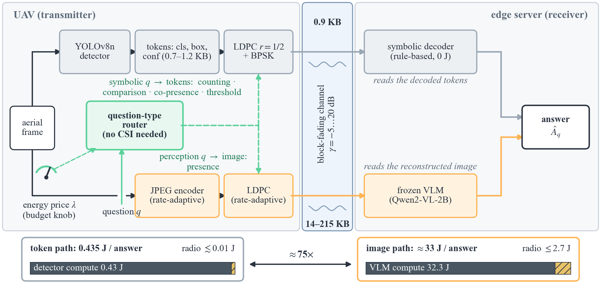
组件选择：发射端 YOLOv8n（在 VisDrone-DET 官方训练集 6,471 张图上微调，评测图零泄漏）；接收端 Qwen2-VL-2B（冻结、商用、不参与任何训练）。整条流水线里没有一个为本任务端到端训练的通信模块——这正是「任务无关发射机 + 冻结接收机」的卖点。
4系统模型与两套计费口径
4.1 物理层
- token（s₁）：逐帧打包，LDPC r=1/2 + BPSK（0.5 bit/use，16 复用/字节）。两套丢帧模型：主线用 Monte-Carlo 估计的信息中断概率（非乐观的闭式遍历值）；固定速率基线用真实 LDPC/BPSK 编解码 Monte-Carlo 得到的 FER。丢帧时 50% 概率整帧丢弃、否则载荷乱码（标签→unknown、框抖动）——损坏 token 仍带部分计数证据，s₁ 优雅退化。
- 诚实声明（有限码长）：token 帧很短（≈96–150 复用），按标称 r=1/2 计费忽略了 ≈0.8–1 dB 的散度惩罚——token 空口在低 SNR 被轻微少计费，最多把 265× 的图像/token 差距虚增 ≈1.3×；结论完全不受影响。
- 图像（s₂）：JPEG 质量匹配可达谱效率（字节预算 = B·τ·SE/8，SE 取衰落分布上的期望；q∈[8,95]，深衰落交灰帧）——经典 SSCC 基线。固定速率版本在低 SNR 产生数字悬崖。
- 信道：AWGN、Rayleigh（无 LoS 最坏界）、Rician K=6 dB（落在 UAV 空地实测 K≈2–15 dB 区间内）；SNR ∈ {−5,0,5,10,15,20} dB。块衰落合理性已验证（96 μs 码字 ≪ 3.8 ms 相干时间；0.3 s 窗覆盖 ≈79 个相干块，支撑遍历谱效计费）。
4.2 口径一：统一复信道使用（谱资源轴）
所有方法（模拟/数字/学习型）统一按每次查询的复信道使用数计费。−5 dB Rayleigh 的量级对比：
| 方法 | 复信道使用 / 查询 | 相对 token |
|---|---|---|
| 速率自适应传图 | 3.72 × 10⁶（12.4 个时隙） | 265× |
| 固定速率传图 | 5.28 × 10⁶（常数） | 377× |
| 未编码模拟 | 3 × 10⁵（常数） | 21× |
| 符号 token | ≈1.4 × 10⁴ | 1× |
4.3 口径二：联合「通信 + 计算」能耗（论文的 TGCN 主轴）
每个被回答的问题计费 E(s,γ) = (u_s/B)·P_tx + E_cmp(s) [J/答案]：
- 发射项：空口时间 × P_tx，P_tx 在 0.1–1 W 参数化（覆盖 3GPP TR 36.777 空中 UE 的 23 dBm=0.2 W），主线取 0.5 W 并做敏感性扫描；
- 计算项：s₂ 触发边缘 VLM——在跑实验战役工作负载本身时实测 RTX 4060 功率；s₁ 触发机上检测器——按 Jetson 级嵌入式 GPU 频带参数化（7–15 W × 15–50 ms），桌面实测 0.066 J 作交叉验证；符号解码器几次算术运算计 0 J（声明制）；
- 声明的不对称：token 路付检测器编码能量（0.43 J），图像路的 JPEG/DJSCC 源编码计 0 J——这是对 token 路不利的保守计费；
- 口径：主线计增量能耗（相对空闲），同时报告总功率口径；计算主导结论限定在「非批处理、单租户」边缘推理；推进/悬停能量（各传输方案不变量）不计。
4.4 任务、数据与划分
- 主基准：VisDrone-DET 验证集 548 张真实航拍图；复现基准：DroneVehicle 490 张图；
- 五类问题确定性生成：presence（存在性）、counting（计数）、comparison（两类计数比较）、co_presence（联合存在）、threshold（计数过阈值）；
- 测试集：按
crc32(image_id) % 100 < 20的 20% 保留——确定性、零泄漏、逐位可复现；所有报告数字均为测试集； - 答案先验平衡：yes/no 显式配平（comparison 269/269，threshold 274/274 等），「永远答 yes」只能拿 0.49–0.55，远低于所有被比方法。
5问题条件化证据路由：三个选择器
5.1 Wilson-LCB 校准选择器（LUT）
对每个（问题类型 × SNR 分箱 × 可选上下文）单元、每个证据级，在训练划分上估计答题准确率并取 Wilson 下置信界，选 argmax LCB——下置信界防止稀疏单元被虚高估计。这就是主实验里的「evidence routing」：训练集上学、测试集上报。
5.2 零参数语义规则（论文的招牌结果）
三信道合并：规则 0.6698 vs 校准 LUT 0.6686——配对 McNemar p=0.12（16,848 个决策里只有 167 个不一致），统计不可区分；AWGN 上两者逐位相同（每个校准单元选级完全一致），两个衰落信道各只在一个单元偏离（−5 dB 的 presence）；第二数据集上规则 0.7293 vs 选择器 0.7246，同样不可分（p=0.20）。数据校准学到的就是这条规则本身。
5.3 逐样本参数化预测器（升级版）
规则是问题条件化但样本盲的。我们用 logistic 回归在仅发送端可得的特征（问题类型、目标类、原始检测数、SNR、任务元数据）上训练 P(correct|x,s)，逐样本选 argmax。作为离线重选评估：三信道全部 +0.7~+1.1 pt（收回 oracle 差距的 10–15%），同时载荷近乎减半（111→58 KB）——机制是当发送端检测证据已充分时把 presence 也路由到 token。
6理论支撑：两个条件引理 + 一个 Pareto 命题
6.1 引理 1（计数充分性）—— 为什么符号类归 token
若检测器是目标类的「无噪计数器」（超阈检测数 = 真实计数），则传输的计数是答案的充分统计量：I(A;N̂(Z)) = H(A) ≥ I(A;Î)（数据处理不等式作用在 A→I→Î 上）。token 路精确保留答案，图像路只保留有损映射 κ 留下的信息——任何基于图的回答者都不可能严格超过基于精确计数的回答者。现实检测器下退化为噪声源比较：token 只输在检测误差 η，图像同时输在 VLM 识别误差 + 信道/压缩失真——实测正是这个 regime（计数：token 0.45 vs 图像 0.28），且结论单调扩展到 comparison / co_presence / threshold（它们的答案都是每类计数的单调函数）。
6.2 引理 2（虚警约束下的存在性检测界）—— 为什么感知类归图像
存在性问题是召回受限的，方向反转。固定虚警预算 α：token 路答 yes 需要至少一个类别 token 存活，检测概率被检测器工作点召回率封顶 P_D ≤ ρ(θ)——检测器漏掉（或信道丢掉）的实例从 Z 中不可恢复；而图像保留亚阈值像素证据，同一 α 下可实现不被 ρ(θ) 封顶的检测概率。推论：截断 top-t 降低召回（伤 presence）却提高 yes 偏置问题的精确率——截断的净效应非单调且类型相关，正是 §11 实测的 +7.7 pt。
6.3 命题（能量–精度 Pareto 支配）—— TGCN 版的理论核心
在两条实测前提下：(E1) 逐点能量序 e_s1(t) < e_s2(t) 对每个类型成立（token 空口更便宜且计算更便宜——它拒绝了 VLM 前向：0.43 vs 32.3 J）；(E2) 带严格感知偏好的互补性（符号类 a_s1≥a_s2，感知类 a_s2>a_s1）。则在全体类型可测策略上，零参数规则 r 满足：(i) 精度最大；(ii) 精度最大策略中能量最小；(iii) 对每个可达精度目标都是能量不劣的可行解——特别地严格 Pareto 支配固定传图策略。
7实验设置：8 方法 × 5 问题类型 × 6 SNR × 3 信道
| 方法 | 含义 / 范式 |
|---|---|
| Error-free image | 理想无差错传图（参考线——并非上界，这是本文亮点） |
| Fixed-rate image | 固定速率 LDPC 数字传图（数字悬崖代表） |
| Rate-adaptive image | 速率自适应 JPEG+LDPC（SSCC，固定 s₂） |
| Uncoded analog | 未编码模拟传图（JSCC-lite / DeepSC 代理） |
| DJSCC (learned) | 紧凑 SNR 条件化深度 JSCC（我们复现，1.67 M 参数） |
| Fixed token | 固定发检测 token（GO-SG 风格符号基线） |
| Evidence routing（ours） | （问题类型, SNR）Wilson-LCB 路由 |
| Oracle | 逐决策取 {s₁,s₂} 最优（选择上界） |
样本量与显著性口径：主评测 936 个唯一测试问题（presence 410 / counting 214 / 其余各 104）× 6 SNR = 每信道 5,616 个打分决策，三信道合并 16,848；DroneVehicle 加 710 题 × 6 = 4,260（仅 Rician）。问题与其 SNR 重放不独立，所以所有置信区间按图像级重采样（image-clustered bootstrap，5000 次）。
8主结果一：精度——路由处处最优，且超过无差错传图
| 信道 | 路由（ours） | 固定 token | 自适应图像 | 固定速率@−5dB | Oracle@20dB |
|---|---|---|---|---|---|
| AWGN | 0.653→0.679 | 0.635 | 0.575→0.611 | 0.369 | 0.756 |
| Rayleigh | 0.641→0.679 | 0.633 | 0.561→0.612 | 0.409 | 0.755 |
| Rician | 0.651→0.681 | 0.635 | 0.584→0.611 | 0.369 | 0.758 |
范围为 −5→20 dB；无差错传图参考 = 0.611。
- 头条：20 dB 处路由 0.679–0.681 超过无差错传图 0.611 约 7 个点——在图是较弱证据的地方拒绝传图。收益来自证据选择本身，不是抗信道。
- 合并统计（三信道，图像聚类 95% CI）：自适应图像 0.6040 [0.579,0.631] < 固定 token 0.6341 [0.601,0.667] < 路由 0.6698 [0.640,0.700] < oracle 0.7459。路由对图像 McNemar p<10⁻¹⁰³，对 token p<10⁻⁵¹——不是边缘显著，是压倒性的。
- 一个看似 bug 的真实现象：−5 dB 固定速率在 Rayleigh（0.409）反而高于 AWGN（0.369）——实测 FER 显示 AWGN 在瀑布下方确定性全灭（FER 1.000），而 Rayleigh 衰落上穿越偶尔送达（FER 0.979）。这类细节我们全部主动解释并在 F10 给出证据。
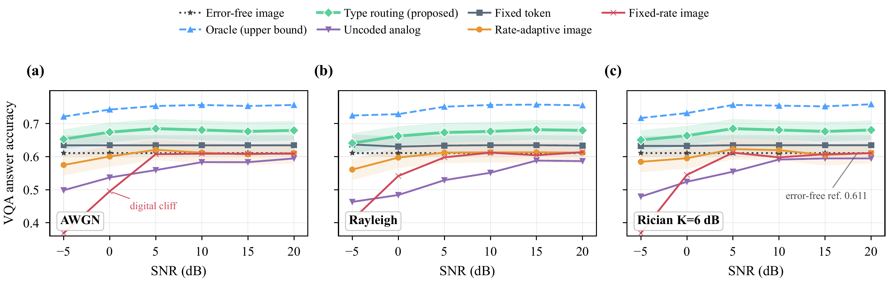
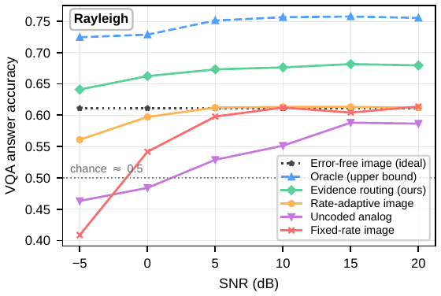
DJSCC 学习基线：动了图像路的效率，动不了「传什么」的答案
为公平加入现代学习型 codec：紧凑 SNR 条件化自编码器（1.67 M 参数，1/32 带宽比），在不相交训练集上训练，同一冻结 VLM/提示词/打分端到端评测。三条诚实读数：(a) 行为符合预期——低 SNR 赢模拟代理（0.521 vs 0.479 @−5 dB）、高 SNR 收敛、每信道使用最便宜的图像管线；(b) 任一 SNR 都没有赢过速率自适应传图（非 SOTA，已在局限性声明）；(c) 路由结论纹丝不动——DJSCC 的计数同样差（0.277），固定 token 在每个 SNR 都赢它，路由领先 7.6–9.3 pt。
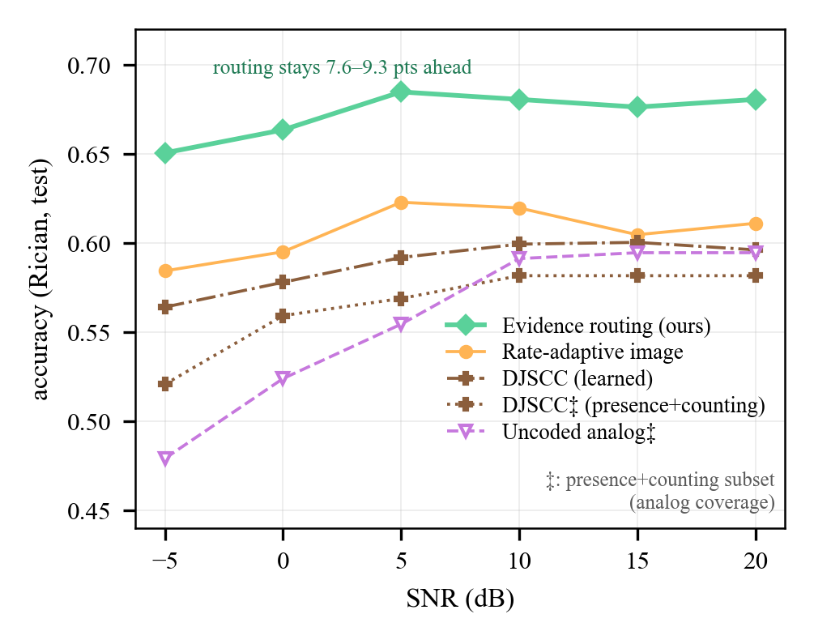
9主结果二：实测能耗前沿——计算主导，路由是最大杠杆
9.1 实测功率（不是估算，是跑实验负载本身测的）
| 阶段（角色） | P̄ (W) | 利用率 | s/项 | 增量 J/项 | 总 J/项 |
|---|---|---|---|---|---|
| 空闲（基线） | 52.3 | 0% | — | — | — |
| YOLOv8n（s₁ 检测器，交叉验证） | 58.7 | 18% | 0.0104 | 0.066 | 0.61 |
| Qwen2-VL-2B（s₂ 回答者） | 107.9 | 81% | 0.581 | 32.3 | 62.7 |
RTX 4060（115 W 上限）声明为边缘服务器代理；nvidia-smi ~8 Hz 采样，弃 20 s 预热，窗间标准差 ≤1.1 W；VLM 负载 = 413 张信道退化测试图 + 真实问题。
9.2 每答案能耗前沿的三条读数
- (a) 类型感知路由严格 Pareto 支配所有固定图像管线（命题的带余量实证）：每 SNR 都比速率自适应传图省 2.2×（−5 dB：15.3 vs 34.4 J；六个 SNR 上比值 2.23–2.25），同时精度高 +4.7~+7 pt；DJSCC 与模拟基线躺在 VLM 地板（≈32.4 J）上且精度更低。
- (b) 固定 token 是前沿的便宜端点：0.435 J/答案——比自适应传图低 75–79×、比路由低 33–35×，精度只低 2–5 pt；方法库里没有任何方法既比它便宜又比它准。
- (c) 效率口径：每焦耳正确答案——token 1.46，路由 0.043–0.047，全图方法 0.011–0.019。
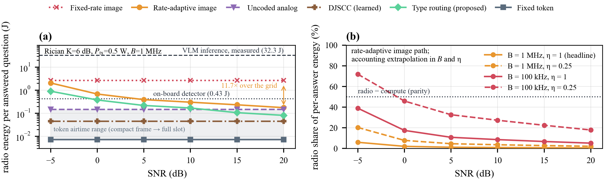
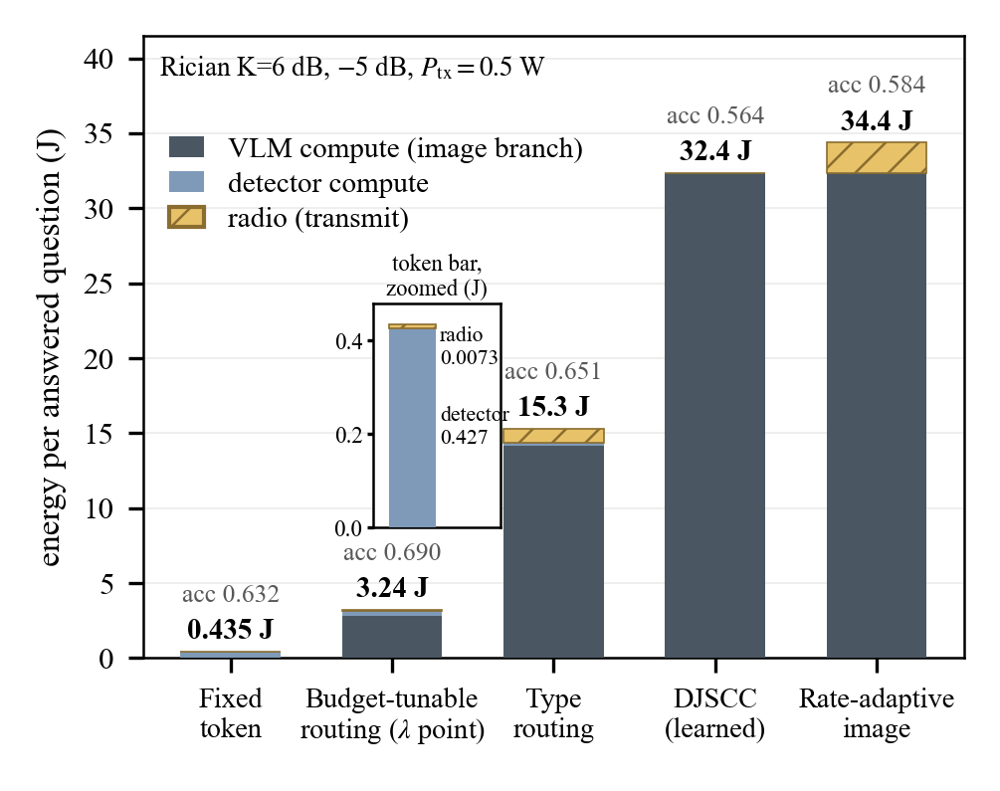
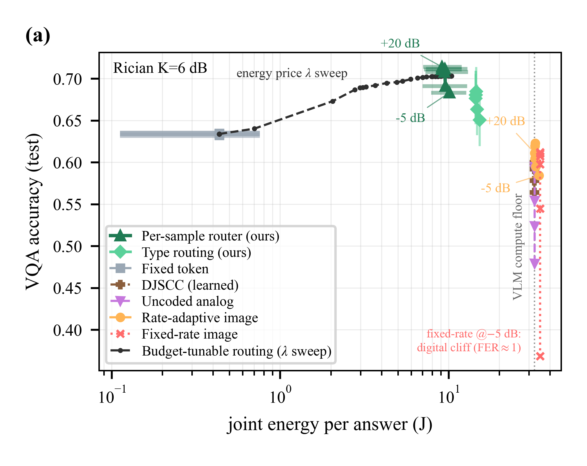
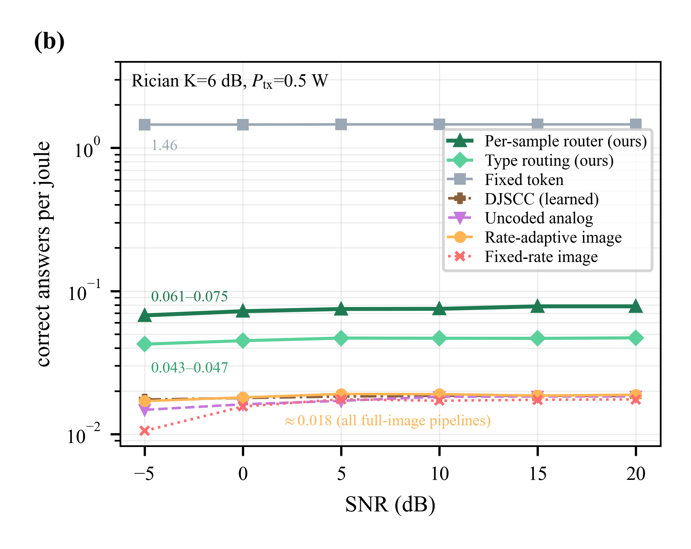
敏感性：因为前沿是计算主导的，没有任何结论依赖发射功率参数化——P_tx 全带扫描下图像/路由比值钉在 2.2×，所有排序不变；总功率口径同样成立。token 路检测器主导（Jetson 带 0.11–0.76 J，桌面 0.07 J）与图像路 VLM 主导（32.4–35.0 J）差两个数量级，与 265× 信道使用差自洽。
10从「能量已审计」到「能量可控」：λ 价格扫描
用 §5.3 的发送端预测器，逐样本按 s*(x) = argmax_s [P(correct|x,s) − λ·E_s(γ)] 路由，扫描能量价格 λ 描出 F5(a) 的虚线前沿：
- 端点自验证：λ→∞ 收敛到全 token 点（0.435 J, 0.634）；λ=0 收敛到精度优先路由器（8.9 J, 0.680）；全图策略（33.0 J, 0.606）严格在曲线下方；
- 精度早饱和：2.4 J 就到 0.680——精度优先水平的 3.7× 省能；峰值 0.691 @4.7 J（AWGN/Rayleigh 峰 0.694/0.690）；引入逐样本证据后，连类型规则（0.67 @14.6 J）也被支配；
- 部署边界：≈5 J 以上实测曲线非单调（图像侧小于价格的预测收益多为预测器噪声），部署不应在 λ < 3×10⁻³ J⁻¹ 运行；
- 接口意义：λ 是每答案能量预算的对偶变量，可直接与时隙级资源分配器组合（连接姊妹调度研究）。
11互补性本体与四组关键消融
11.1 证据–问题互补性（规则背后的现象）
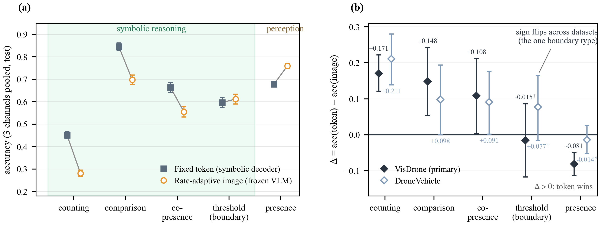
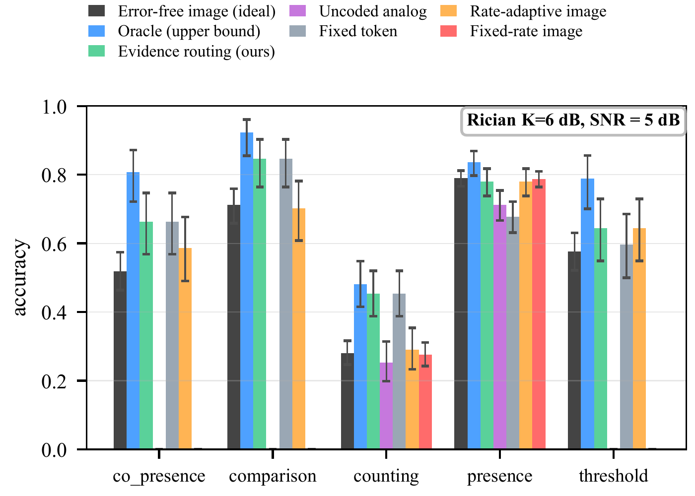
11.2 消融一：谁来解码 token？——符号解码器是承重设计
质疑：token 优势会不会只是「用校准符号解码器答符号题」的工件？直接测试：把同样的信道退化 token 文本交给 VLM（无图像输入）回答。
| 类型 | n | VLM 读 token | 符号解码器 | VLM 读图 |
|---|---|---|---|---|
| presence | 1230 | 0.554 | 0.678 | 0.761 |
| counting | 642 | 0.364 | 0.450 | 0.273 |
| comparison | 312 | 0.532 | 0.846 | 0.712 |
| co_presence | 312 | 0.449 | 0.663 | 0.574 |
| threshold | 312 | 0.446 | 0.596 | 0.609 |
| 合并 | 2808 | 0.485 | 0.634 | 0.606 |
VLM 是 token 的最差消费者：合并 0.485 vs 0.634（−14.9 pt，p<10⁻²⁷），comparison 上差距最大（0.532 vs 0.846）——VLM 从文本里复现不了计数算术。边缘侧符号解码器是承重设计选择，也是 token 柱与接收 VLM 无关的原因。
追加的自由措辞探针（回应「模板对齐」质疑）：440 个保留问题各配两个自由改写（880 项）。回答优势对措辞稳健：改写下解码器对 VLM 差距 +0.165 vs 原措辞 +0.159，五类符号全保持；但严格模板解析器在改写上 100% 失败——一个轻量关键词意图分类器恢复解析（0% 失败、100% 意图匹配），此后逐类精度与原措辞零不一致对。结论：优势在回答而非模板对齐；开放措辞部署需要意图前端（已入局限性）。
11.3 消融二：token 预算 top-t——「少即是多」
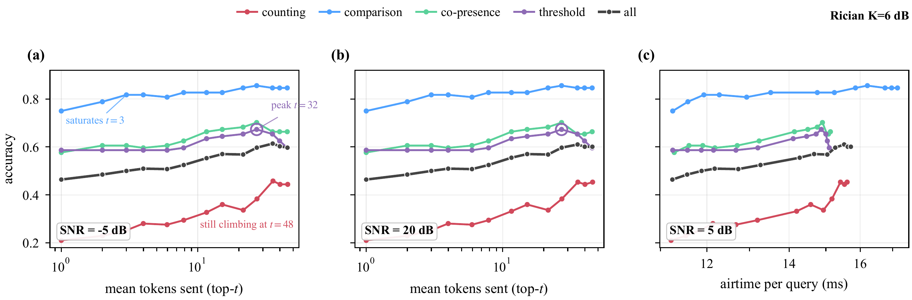
11.4 消融三：哪些路由维度承重？——只有问题类型
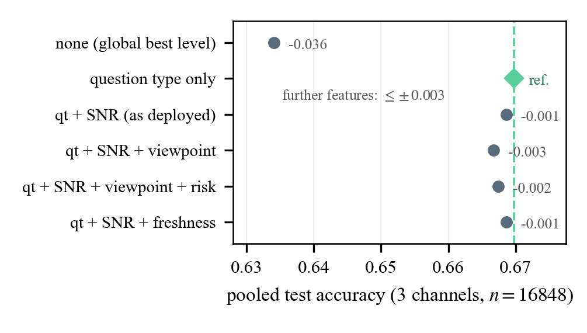
12稳健性：CSI 失配、跨 VLM、跨数据集、可复现性
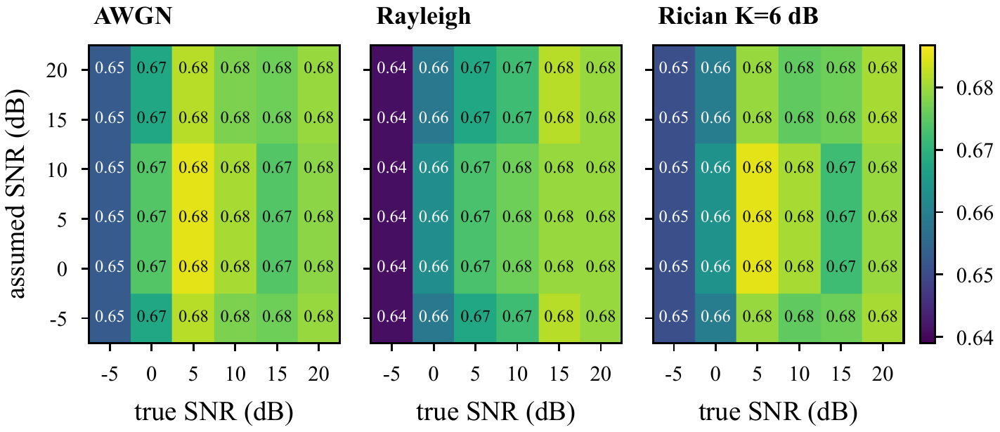
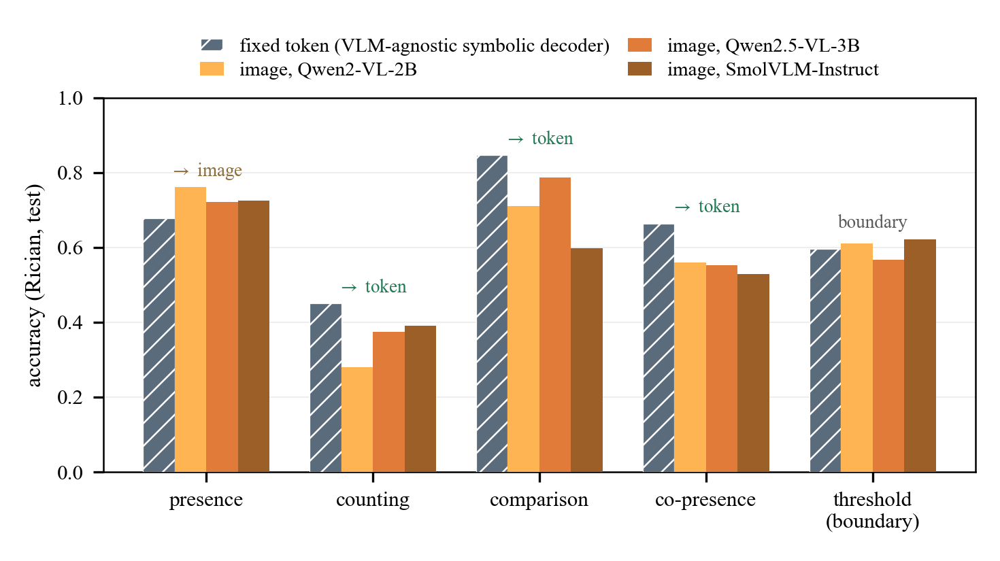
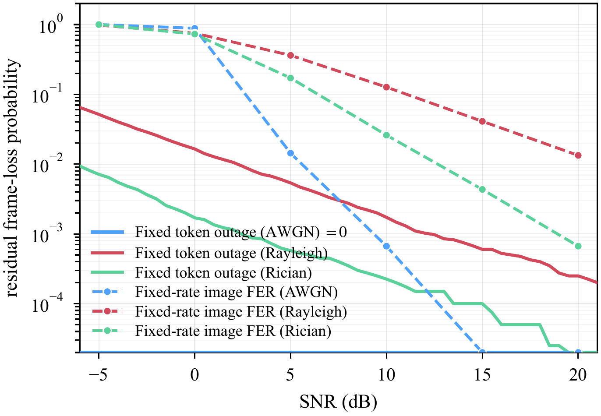
可复现性三连：① crc32 划分逐位可复现，脚本/校准产物/逐决策日志全部版本管理；② 不同硬件独立重算在共享子集上逐点一致（AWGN 路由 0.628→0.668 vs 0.627→0.668）；③ 两次端到端 s₁ 重跑 99.15% 判定一致（聚合都是 0.6709），十次信道种子重抽两个最常引用单元 ±0.003——种子噪声比每一个被解释的差距低一个数量级。
13延迟与 U-space 安全桥
13.1 端到端延迟
−5 dB Rayleigh：速率自适应传图 = 3.72 s 上传 + 0.60 s VLM 推理 = 4.32 s；token 路全程 0.089 s——49×；固定速率传图 5.87 s。弱链路下的实时性论证。
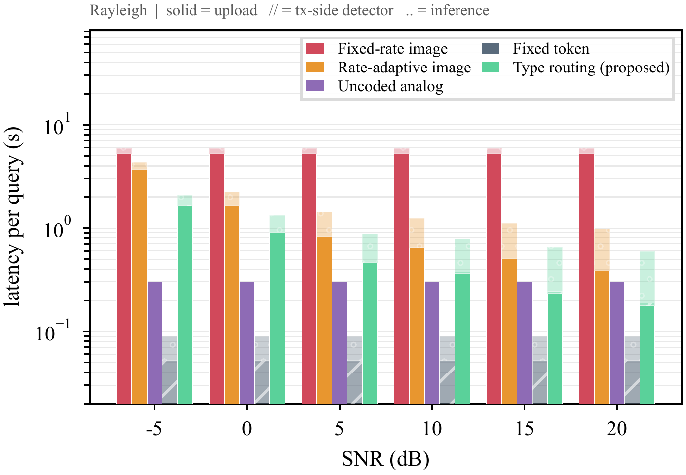
13.2 安全桥：同一份「证据节俭」保住间隔基线
U-space 间隔管理中，战术间隔最小值随通信延迟增长（BUBBLES D2.1）。姊妹调度研究的 M/G/1 分析（Rayleigh、峰值负载、共享 C2、2σ）：token 路由把认证间隔最小值保在基线（370.6 vs 370.5 m）；连续传图峰值膨胀到 394.3 m，固定速率约 404 m。省能量的同一机制同时保住了空域安全预算。
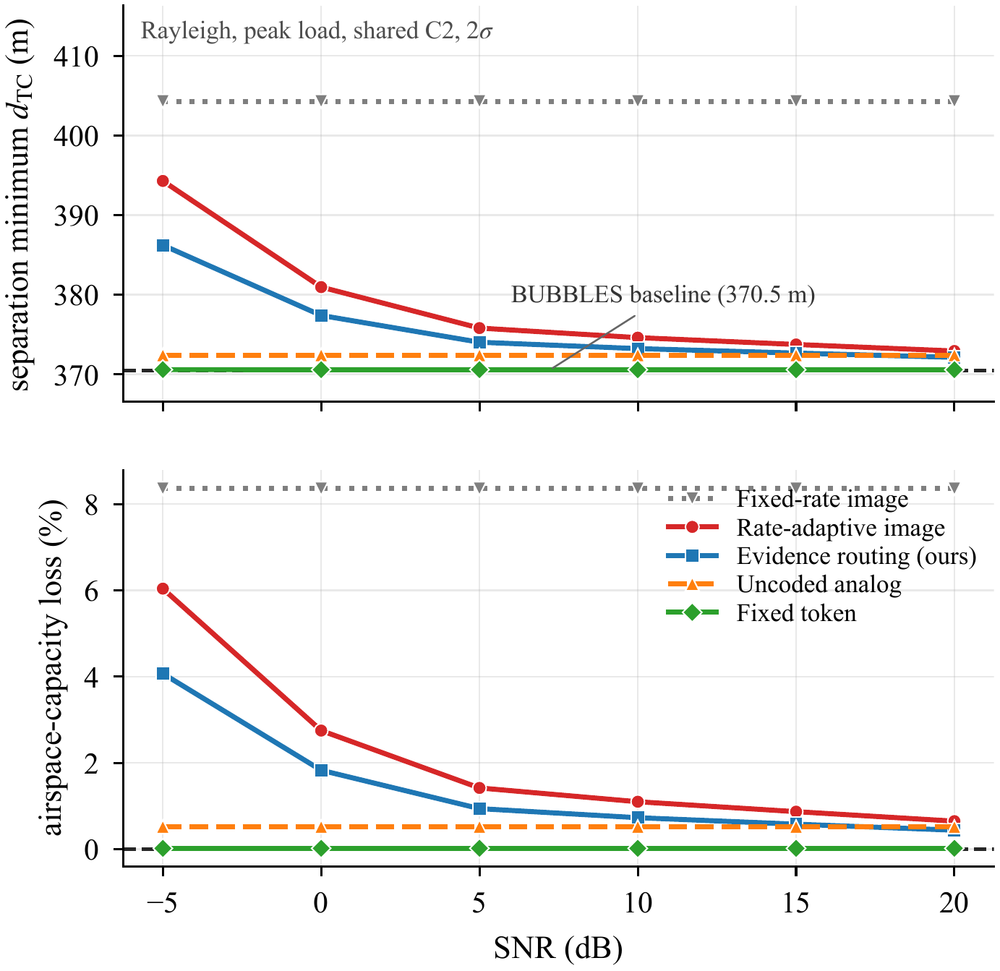
15总结
在任务导向的空中 VQA 里，能效不来自更好的信源/信道编码，而来自证据节俭：先问「这个问题需要哪级证据」，再决定传什么、以及最贵的那次 VLM 推理跑不跑。
- 零参数规则 = 数据校准选择器（AWGN 逐位相同）——规则简单不是妥协，是数据自己学出来的答案；
- 路由赢过无差错传图（0.68 vs 0.61）——证据选择本身就是精度来源；
- 实测每答案前沿计算主导，路由省 2.2× 且更准，token 便宜 75–79×，λ 一个旋钮实现全 token↔精度优先连续可调；
- 21,108 个打分决策、8 方法、双数据集、三信道、跨 VLM、全部实测功率——证据链完整。
当前状态与下一步：全文 8 节完成、17 图全部由 160 服务器当前日志重新生成（图–数据–脚本三方台账在 figures/MANIFEST.md）、cover letter 定位稿已备；TGCN 审读格式（单栏双倍行距 ≤30 页）已按官方模板排版。欢迎大家对叙事重点和图的取舍提意见。